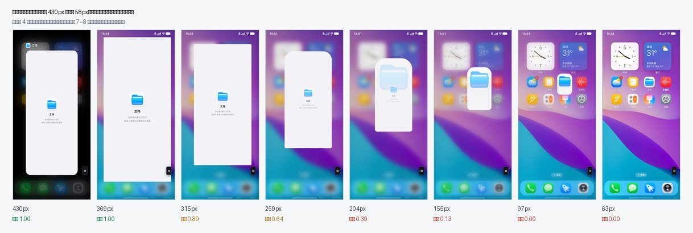
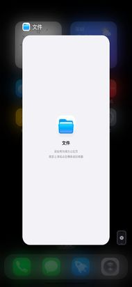
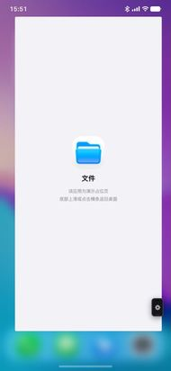
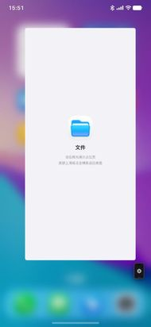
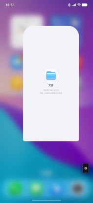
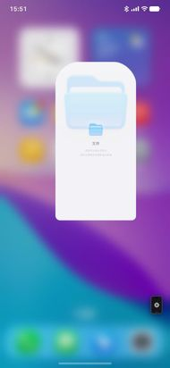
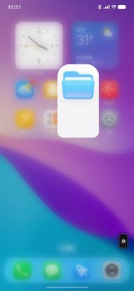
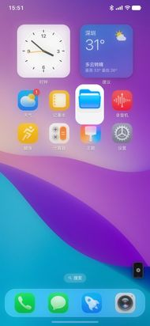
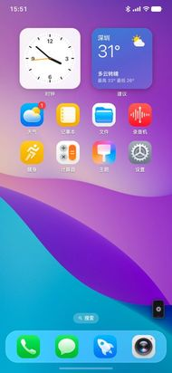

把三条「上滑」路径各做了全 DOM 透明度穷举采样，再用 CDP screencast 把命中那条的 飞行全过程逐帧抓下来。结论：三条里只有一条真的会把正在飞的卡片内容淡到 0， 而且淡出远远早于外壳消失 —— 中间那一大段就是肉眼看到的「卡片变透明」。
命中：从应用内快滑上滑返回桌面（hero close）。
窗口从 430px 收缩到 58px 落到桌面图标位置；其中
内容层 .aw-content 在窗口还有 315px
时就开始淡，到 114px 已经全透明；
而卡片实心底 .aw-fill 一直到 82px 都还是完全不透明，71px 才开始淡。
⇒ 窗口从 315px 缩到 82px 这一整段（占整段行程的 64%），屏幕上是一张 「白底实心、里面什么都没有」的怪壳。观感上就是「卡片变透明了、内容先没了」。
另外两条上滑路径（切换器里上滑删卡、桌面上滑进多任务）完全清白：
跟手卡片本体与卡体 opacity 逐帧恒为 1，0 例外。
| 路径 | 卡片本体 opacity | 内容层 / 卡体 opacity | 判定 |
|---|---|---|---|
|
A · 切换器里上滑删除卡片
停在多任务里，对顶卡上滑跟手 → 松手飞出
|
恒 1（101/101 帧） | 跟手卡恒 1；仅退场卡 5 帧到 0（预期） | 清白 |
|
B · 桌面/应用上滑进入多任务
底部上滑 → 跟手浮起 → 停驻进切换器
|
恒 1（137/137 帧） | follow 卡 op / bodyOp 恒 1 背景遮罩 dim 0 → 1 是背景，不是卡 |
清白 |
|
C · 应用内快滑上滑返回桌面
在应用里从底部快滑 → 窗口收缩回桌面图标
|
外层 win 恒 1 | .aw-content 1 → 0（315px 起淡 / 114px 归零） .aw-fill 到 82px 仍为 1 |
命中 |
|
对照 · 从切换器点卡进应用再返场
同一条 hero 时间线的另一条分支
|
— | content 恒 1（0/118 帧非 1） | 不触发 |
下面这条是从 CDP screencast 逐帧抓回来的真实画面（不是截图拼接，没有丢帧）。 窗口一边缩小、一边平移到「文件」图标的位置；注意从第 5 张起卡片里的画面开始明显虚掉， 第 7、8 张只剩一块白底，完全看不到内容。









.aw-content opacity
卡片实心底 .aw-fill opacity
错位区间：外壳还在、内容已空
三条时间线都在 hero close 这一处（heroGeometry.js 的 CLOSE_TIMING.contentOutStart）。
A / B 两种改法 不动现有手感，只是把「内容淡出」这件事挪到正确的位置；
C 是如果你说的其实是别的地方，我下一轮直接对那条路径取证。
contentOutStart 推到时间线末端，让 .aw-content 与外壳一起收敛，
只在真正与桌面图标交接的那一瞬间处理。飞行途中画面始终可见 ——
这就是「不要变透明」最直接的实现，且不改变现有的缩放与位移手感。
heroGeometry.js · AppWindow.vue · useHeroTransition.js